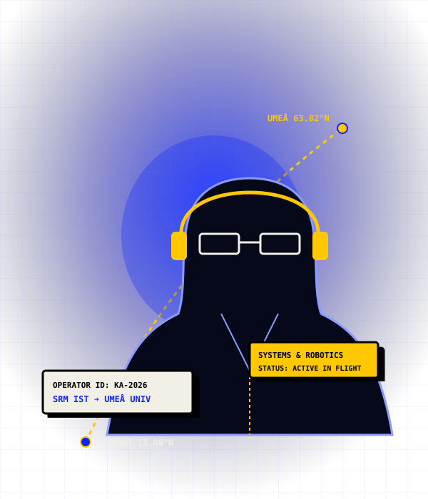
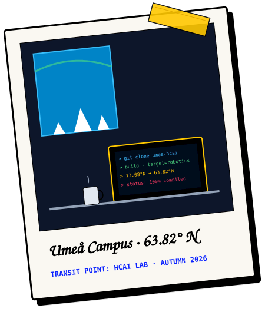
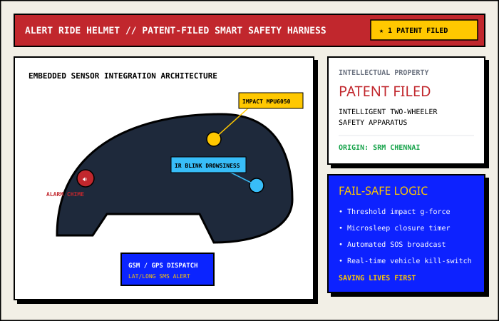
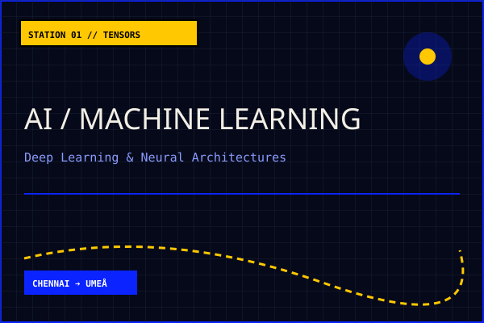

LAT 13.0827° N ➔ 63.8258° N
SRM INSTITUTE OF SCIENCE & TECHNOLOGY ➔ UMEÅ UNIVERSITY, SWEDEN

Building low-latency systems & human-centered intelligent tools from Chennai to the Arctic Circle.
"Software that solves physical, non-negotiable emergencies."
"I build things that close the gap between reporting a problem and solving it."
Whether deploying geospatial waste dispatch for civic volunteers, cutting latency on safety helmets during sudden impact, or squeezing cache performance out of C++ algorithms, I treat code as a direct mechanism for real-world impact.
In Chennai, watching illegal waste dumps pile up on neighborhood corners sparked the idea for CleanMap. Seeing late-night motorcycle accidents spurred the patent-filed Alert Ride Helmet.
Packing my bags for Umeå University in northern Sweden tested everything under sub-zero conditions: diving deep into low-level C++ performance tuning, reverse vending robotics, and human-centered AI that genuinely respects human agency.

PATENT-FILED SMART SAFETY HARNESS

// Loading routine...

The journey from Chennai to Umeå continues. Whether you are exploring high-performance systems, collaborating on human-centered AI and robotics, or discussing opportunities, my inbox is open.